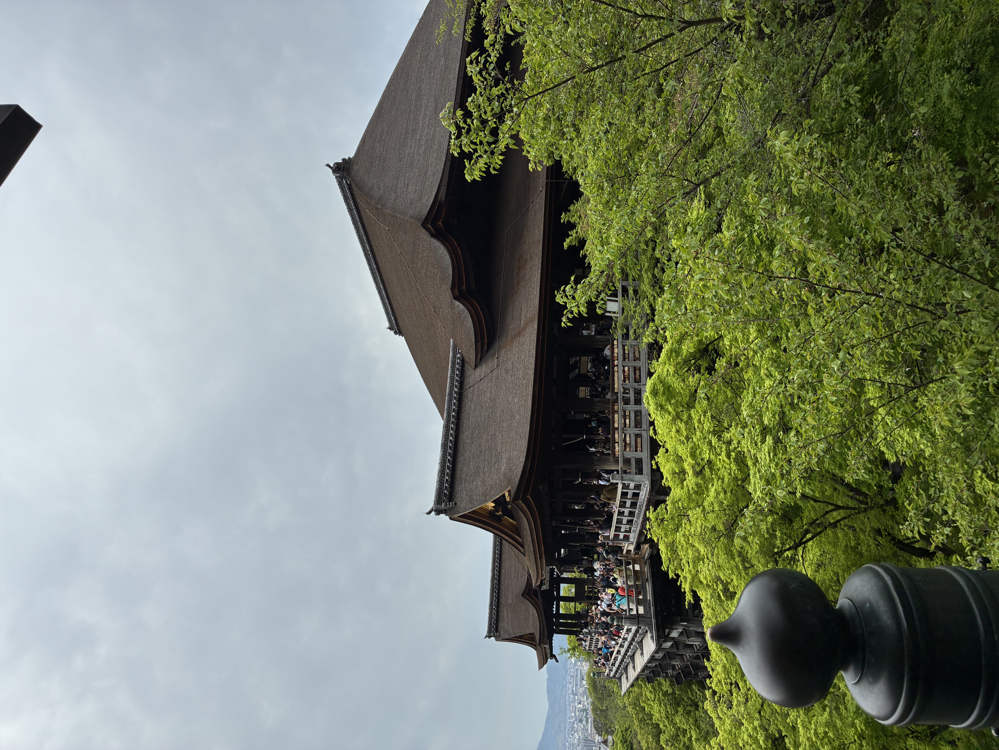

出張の合間に、奈良・京都へ足を延ばしてまいりました。沖縄から本州に出る機会はなかなかないので、せっかくならと観光も楽しんできました。
東大寺の大仏様は、その圧倒的な大きさに思わず言葉を失いました。高さ約15メートルの盧舎那仏は、1300年以上の歴史を持つ日本最大の仏像。普段トラックの大きさには慣れているつもりですが、スケールの違う迫力に感動しました。
清水寺では、新緑が広がる美しい景色に心が洗われました。「清水の舞台から飛び降りる」という言葉の通り、舞台からの眺めは絶景で、遠くに京都の街並みを見渡すことができました。
普段は沖縄からなかなか出られない分、本州の歴史と文化に触れる本当に貴重な時間となりました。また頑張ります！